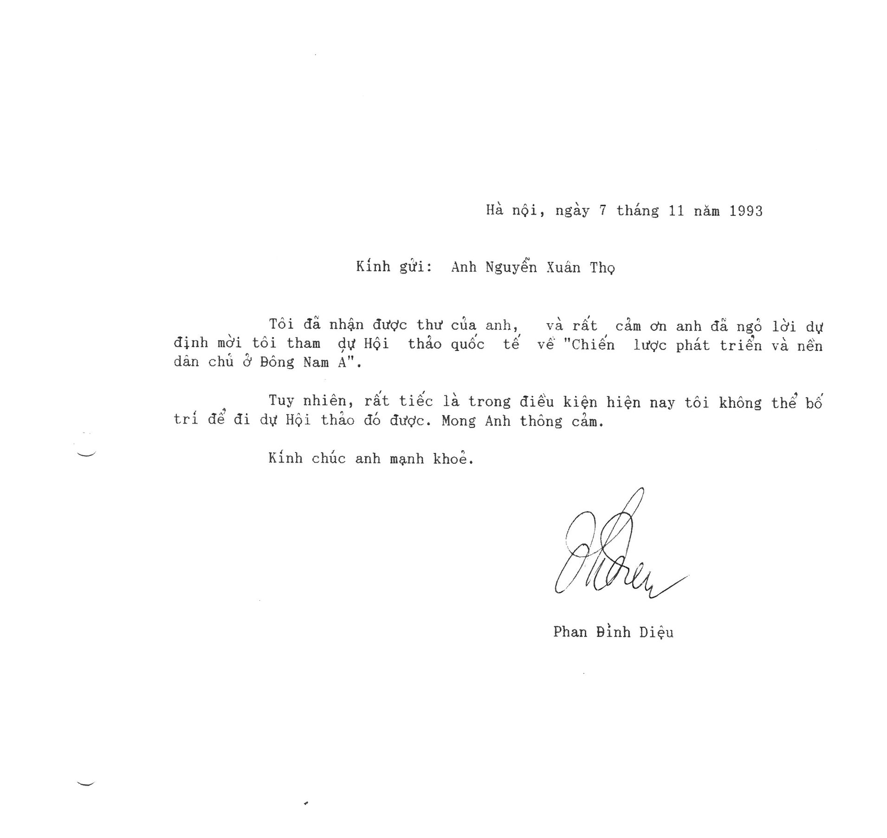

Hôm nay, anh Phan Đình Diệu đã về nơi an nghỉ cuối cùng, tôi nhớ đến anh, một nhân cách mà tôi ngưỡng mộ.
Vào cuối những năm 80, tôi phụ trách mảng nghiên cứu khoa học, kỹ thuật của VTV nên hay phải sang Ủy ban Khoa học Kỹ thuật Nhà nước ở đường Trần Hưng Đạo để họp về các chính sách khoa học. Thường là họp xong không nhớ chủ đề gì. Rồi một lần tôi may mắn được ngồi gần anh Diệu. Hội nghi khá nhỏ nên buổi trưa, hai anh em có dịp làm quen nhau.
Tôi nghe tiếng giáo sư Phan Đình Diệu đã lâu, nhưng lúc đó tin học còn là một cái đó rất mới mẻ, rất cao sang ở Việt Nam. Vì tôi chỉ là tay kỹ sư chuyên về vô tuyến điện kinh điển của transitor và đèn điện tử nên về chuyên môn anh và tôi không có gì để trao đổi với nhau, nếu có thì lại như táo tây và khoai lang. Vì vậy câu chuyện xoay quanh chính sách khoa học và thân phận của người trí thức Việt Nam, vì anh biết tôi cũng là cán bộ không vào đảng như anh.
Cuộc gặp ngắn ngủi đó đã để lại cho tôi một ấn tượng mạnh về anh. Tuy lớn hơn tôi 15-16 tuổi, địa vị xã hội hơn cả thủ trưởng của tôi, nhưng anh rất thân thiện và lịch sự. Câu chuyện anh trao đổi với tôi tuy ngắn, nhưng cũng chứa đựng những ý mà hôm rồi tôi đọc lại trên BBC thấy rất tâm đắc:
“Trái ngược với nền giáo dục thời Pháp, chế độ xã hội chủ nghĩa đào tạo ra những chuyên viên hơn là những trí thức. Chúng tôi có nhiều nhà toán học, nhà vật lý học, nhà sinh học, kỹ sư... và bây giờ thêm nhiều nhà kinh tế. Nhưng chưa bao giờ họ được học để suy nghĩ về các vấn đề của xã hội. Đảng nghĩ hộ cho mọi người. …
….Cuối cùng là thanh niên, những người vừa được hay còn đang được đào tạo trong những năm gọi là đổi mới. Những năm gần đây, quả đã có một nền văn nghệ độc lập khởi sắc. Nhưng còn phải có thời gian thì các xu hướng nói trên mới có thể hình thành một lực lượng xã hội chính trị thực sự. Nói tóm lại, kết luận của tôi là hiện nay Việt Nam chưa có một giai cấp trí thức.”
( Trích trao đổi của anh Diệu với nhà báo Na-Uy Stein Tønnesson)
Năm 1991 tôi rời Việt Nam sang Đức lập nghiệp. Ở đây tôi kết bạn với mấy gã „Đảng Xanh“, vốn có máu nổi loạn. Đảng Xanh lúc đó đang còn nghèo (mãi đến 1998 mới ngọc đầu lên nhờ tham gia chính phủ của Schöder), vậy mà họ dám bỏ tiền xây dựng một „Nhà Á châu“ (Asienhaus) ở Essen và mời tôi tham gia. Tôi chân ướt chân ráo, mới lập nghiệp, khó khăn lắm nhưng tham gia vào đó cũng thích, vì mỗi lần đi họp (họ thanh toán tiền vé) là có sách báo Việt Nam đọc thoải mái.
Hè 1993, Nhà Á châu dự định tổ chức hội thảo quốc tế về „Đổi mới kinh tế và Dân chủ hóa ở Đông Nam Á“ vào tháng 2.1994, với một số khách mời từ Việt Nam và mấy nước Asean khác. Ở các nước kia thì tìm diễn giả vừa có trình độ tổng hợp, có cách nhìn độc lập với chính phủ, biết ngoại ngữ dễ lắm, nhưng từ Việt Nam thì không đơn giản.
Jürgen Maier, một gã luôn đầu bù tóc rối, ăn mặc lôi thôi, nhưng rất sắc sảo, được phân công chuẩn bị hội nghị này. Cậu đến nhà tôi, đòi ăn nem rán, rồi nhờ tôi tìm cho một nhân vật từ Việt Nam với các tiêu chí trên (10 năm sau, tôi xem TV thấy một Mr. Maier tóc tai ngay ngắn, com-lê, cravat, luôn đi theo ngọai trưởng Đức Joschkar Fischer1)
Tôi nghĩ ngay đến anh Phan Đình Diệu, vì đã đọc các phát biểu tâm huyết, các phân tích kinh tế chính trị sắc bén của anh. Tôi gọi điện trước hỏi ý kiến anh, anh vẫn nhận ra tôi. Anh mừng lắm và nói: Anh Thọ phải gửi giấy mời chính thức để tôi làm thủ tục sang họp.
Hội đảng Xanh sướng vô cùng, vì Việt Nam lúc đó đang là điểm nóng, với những cải cách kinh tế đột phá và diễn giả như giáo sư Diệu thì quả là nặng ký nhất hội nghị.
Giấy mời lập tức được fax và đồng thời gửi hỏa tốc về Hà Nội cho anh. Vài tuần sau tôi bỗng nhận được thư anh Diệu gửi. Anh lấy làm tiếc là không thể tham gia hội nghị được. Tôi buồn lắm, tuy trong thâm tâm đã có chuẩn bị tình huống này.
Tôi báo cho tụi bạn Đức, họ chưng hửng và lại bắt tôi phải tìm được người thay thế.
Tôi nói thẳng: Người như GS Phan Đình Diệu không thể thay thế được lúc này! Không ai có thể phân tích được mối liên quan về cải cách kinh tế, mở cửa xã hội, cải cách chính trị Việt Nam vừa hay vừa khoa học như anh Diệu.
— Làm sao bây giờ?
— Giờ chỉ mong tìm một chuyên gia kinh tế, có cái nhìn tương đối độc lập với chính quyền, có quan hệ tốt với giới đầu tư nước ngoài, hiểu luật đầu tư của Việt Nam. Nếu đồng ý thì tôi sẽ giới thiệu người khác, thế thôi!
Bốn tuần trước ngày hội nghị khai mạc, luật sư Nguyễn Ngọc Bích2 từ Sài Gòn, thành viên sáng lập Công ty Investip, chiếc cầu đầu tiên giúp các nhà đầu tư phương tây vào Việt Nam, đã nhận lời dự hội nghị. Tôi vinh dự được đón anh Bích về nhà ở một tuần. Tôi nhớ câu nói vui của anh Bích: „Giờ đây tôi phải góp phần mở đường cho nền kinh tế thị trường, tức là đang làm cái việc mà vì nó, tôi đã phải đi cải tạo 13 năm“.
Với kiến thức về luật, về kinh tế và trình độ tiếng Anh điêu luyện, anh Bích đã làm cho ban tổ chức hội thảo rất thỏa mãn, tuy đề tài cải cách chính trị và dân chủ hóa Việt Nam chỉ được nói sơ qua.
Giả sử như tại hội nghị đó, khách quốc tế có bàn sâu hơn nữa về dân chủ hóa và mở cửa xã hội Việt Nam như đã dự định cùng giáo sư Phan Đình Diệu, thì thân phận của người Việt Nam giờ đây cũng chẳng vì thế mà thay đổi.
Bởi những người Việt Nam dám sống, nghĩ, và hành động như anh Diệu không có nhiều.
Köln 18.05.2018
Anh Diệu là người thầm lặng, nhiều người chưa biết về anh, nên đọc ở đây: http://www.bbc.com/vietnamese/vietnam-44098055
Nguồn: Facebook Nguyễn Xuân Thọ
